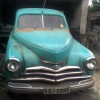

Un român are o maşină GAZ Pobeda M20, fabricată în 1950. Pentru că nu-şi permite şi nici nu ştie să o întreţină, autoturismul de epocă arată exact aşa. Românul nostru are conturile blocate pentru că n-a mai plătit impozitul la Pobeda de 20 de ani, iar penalităţile pentru datorii continuă să crească. Vehiculul e din ce în ce mai ruginit, iar fiecare zi care trece înseamnă încă nişte pierderi acumulate.
Într-o bună zi, românul nostru găseşte un cumpărător pentru hârb. Dă afară găinile din Pobeda, iar cu banii primiţi îşi achită o parte din datorii. A încasat vreo câteva mii de lei.
 Peste ani, maşina GAZ-M20 Pobeda vândută de român ajunge pe coperta revistelor dedicate autoturismelor de epocă, participă la raliuri şi expoziţii. Experţii o evaluează la 100.000 de euro, dar proprietarul n-are niciun gând de vânzare, pentru că fostul coteţ de găini aducător de pagubă, produce bani. Nu-i de mirare că oamenii plătesc pentru o poză sau o plimbare maşina din această fotografie.
Peste ani, maşina GAZ-M20 Pobeda vândută de român ajunge pe coperta revistelor dedicate autoturismelor de epocă, participă la raliuri şi expoziţii. Experţii o evaluează la 100.000 de euro, dar proprietarul n-are niciun gând de vânzare, pentru că fostul coteţ de găini aducător de pagubă, produce bani. Nu-i de mirare că oamenii plătesc pentru o poză sau o plimbare maşina din această fotografie.
Românul nostru îşi smulge părul din cap la toate emisiunile televizate, însoţind fiecare veste bună despre fosta lui maşină cu tradiţionalele sudălmi autohtone. Mama actualului proprietar de Pobeda e cea mai pomenită femeie.
Cine e românul şi care e Pobeda lui
Recunoaşteţi povestea şi personajele? E istoria SNP Petrom şi, mai recent, a Cupru Min Abrud, vândută de statul român pentru 201 milioane de euro. Stigmatizăm proletar privatizările uitând, de fiecare dată, că statul român nu e în stare să-şi rentabilizeze activele. Simpla deţinere a unui bun ori a unei resurse nu e echivalentă cu profitul. Aceeaşi Pobeda e adăpost pentru galinacee sau maşină de colecţie. Depinde cui aparţine.


{kind=link}
{kind=link}
asa si-au batut romanii joc de tot ce au avut. acuma degeaba isi mai baga unghia in gat, cat au avut industrie n-au stiut sa o pretuiasca!
ne dam seama valoarea unui lucru abia dupa ce nu-l mai avem.
Teoria voastra e corecta daca vorbim de un singur roman nu foarte priceput. Dar daca e vorba de stat, e greu de crezut ca toti cei care ne guverneaza sunt idioti si nu stiu cum sa exploateze anumite resurse. Mai probabil ei sut hoti si vand anumite active pe nimic pentru ca le convine cumparatorul si, mai ales, comisionul.
@Tudor Barbu, ipotezele nu se exclud. Poţi fi, simultan, idiot şi hoţ.
BUNA SEARA DRAGI ROMANI!NOI NU SANTEM INAPOIATI ASA VREM SA PAREM UNII!!IMI PARE FOARTE RAU CA SANT DESTULE MASINI DE EPOCA DAR NU SE VAND LA PRETURI ONESTE!!ROMANUL VREA SA LE TINA PANA CAND PUTREZESC IN LOC SA LE VANDA.NOROC BUN!!
Cum poti fi atat de partinitor si atat josnic – domnule “ziarist” ? Cand ai painea si cutitul in mana, ma intreb de ce le-au luat atat, sa puna, nu o fabrica sau o uzina pe butuci, ci o intreaga tara ? Si tu, vii aici si pui in discutie, printr-o paralela cu o masina de epoca, “vrednicia” unui intreg popor ? Paunescu avea o vorba : …din ce “samanta” ati fost voi “intrupati”…?
@stan(5), cui anume i-a luat atât să “pună pe butuci” ţara? Cine sunt cei cu pâinea şi cuţitul şi, mai ales, cine i-a ales?
Comments on this entry are closed.